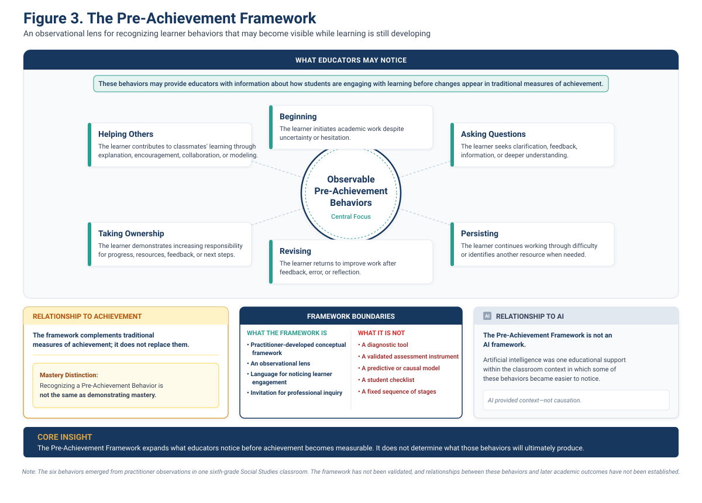

Beginning
The student initiates academic work rather than remaining immobilized by uncertainty, confusion, or hesitation.
Professional learning for K–12 educators and leaders
Learning deserves to be noticed before it is measured.
Help educators recognize, support, and respond to six observable learner behaviors while learning is still unfolding—especially in AI-integrated classrooms.
Interactive keynotes, hands-on workshops, and implementation support grounded in practitioner inquiry—not another packaged program or student checklist.
The six observable behaviors
Not stages. Not a checklist. Not a prediction model.
Built for district priorities
The framework
The Pre-Achievement Framework organizes six observable learner behaviors repeatedly noticed during this practitioner inquiry. It complements traditional measures of achievement by drawing attention to forms of learner engagement that can appear earlier.

Six Pre-Achievement Behaviors
Each behavior describes something observable. Students may demonstrate different behaviors in different combinations depending on the task, setting, relationships, and supports available.
The student initiates academic work rather than remaining immobilized by uncertainty, confusion, or hesitation.
The student seeks clarification, feedback, additional information, or deeper understanding in order to move forward.
The student continues despite difficulty, uncertainty, frustration, or an unsuccessful attempt—and may recognize when support is needed.
The student returns to work after feedback, an error, or reflection and makes an effort to improve it.
The student shows increasing responsibility for progress, feedback, resource selection, missing work, or deciding what to do next.
The student contributes to classmates’ learning through explanation, encouragement, collaboration, modeling, or an appropriate strategy.
Framework boundaries
The framework is designed to help educators notice more of the learning process. It does not lower academic expectations or turn early behaviors into proof of mastery.
About the inquiry
The report draws on classroom observation across the 2025–2026 school year, a spring 2026 student AI-use survey, reflective practice, and professional dialogue.
The survey generated 114 submissions between April 1 and May 22, 2026. After duplicate cleaning and reconciliation, the analysis represented 95 unique respondents. Follow-up AI-use analyses were limited to the 69 respondents who identified themselves as AI users in the first survey question.
What happens before achievement that educators may not be noticing?
Then back to the classroom.
PRACTITIONER INQUIRY REPORT
What My Middle School Students Taught Me About Learning in the Age of AI
Wendell D. Mosby 2026Foundational report
Beyond the Achievement Gap documents the classroom observations, student survey findings, Composite Classroom Portraits, conceptual development, limitations, and future-research questions that led to the Pre-Achievement Framework.
“Achievement tells us where students arrived. Pre-Achievement Behaviors may help us notice how they are beginning to get there.”
Speaking & Professional Learning
Schools are surrounded by outcome data. The Pre-Achievement Framework helps educators notice and strengthen what happens first—giving school teams an earlier, more human view of student readiness and a practical place to intervene.
Signature session
In this engaging, classroom-grounded session, Wendell introduces a new lens for understanding student readiness in an AI-shaped learning environment. Participants examine what achievement data can miss and explore strategies that build confidence, curiosity, persistence, and ownership without lowering rigor.
Three ways to engage
Virtual leadership session
$1,500
A focused 60-minute introduction for superintendents, cabinet teams, principals, AI committees, or instructional leaders.
Half-day professional learning
$3,500
A highly interactive three-hour learning experience for educators and school leaders, delivered virtually or in person.
90-day implementation
$9,500
A guided partnership that moves a district from introduction to consistent practice across up to three schools.
Start a district conversation
Share your district, preferred format, target date, and primary goal. Wendell will respond with the best-fit engagement and a clear next step.
In-person travel and lodging are billed separately at cost. A 50% deposit reserves the engagement date. Additional schools, sessions, or participant groups may be quoted separately.
About the author
Wendell D. Mosby is an educator, author, practitioner-researcher, and creator of the Pre-Achievement Framework, a practical approach that helps schools recognize and strengthen the behaviors students display before achievement appears in the data.
Drawing from classroom observation, student voice, and more than two decades of work across education, youth development, nonprofit leadership, and community engagement, Wendell equips educators to see what traditional metrics miss—and build the conditions in which more students are ready to achieve.
The invitation
The framework is offered as a beginning rather than an endpoint—something to be examined, challenged, refined, and investigated across other classrooms and contexts.